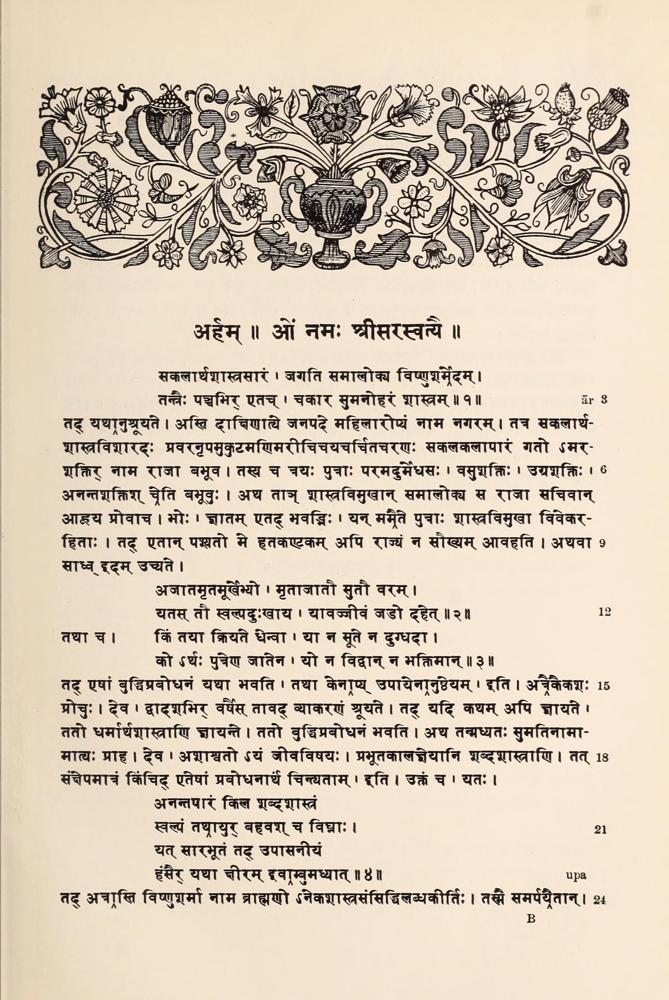
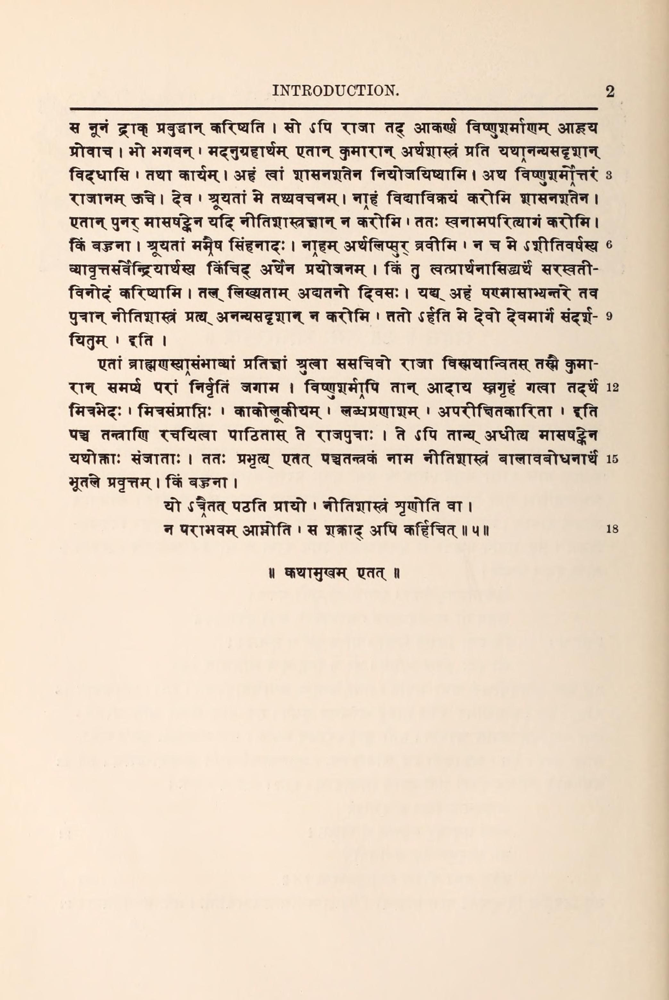

Introduction
One Vishnusharman, shrewdly gleaning All worldly wisdom's inner meaning, In these five books the charm compresses Of all such books the world possesses.
And this is how it happened.
In the southern country is a city called Maidens’ Delight. There lived a king named Immortal-Power. He was familiar with all the works treating of the wise conduct of life. His feet were made dazzling by the tangle of rays of light from jewels in the diadems of mighty kings who knelt before him. He had reached the far shore of all the arts that embellish life. This king had three sons. Their names were Rich-Power, Fierce-Power, Endless-Power, and they were supreme blockheads.
Now when the king perceived that they were hostile to education, he summoned his counselors and said: “Gentlemen, it is known to you that these sons of mine, being hostile to education, are lacking in discernment. So when I behold them, my kingdom brings me no happiness, though all external thorns are drawn. For there is wisdom in the proverb:
Of sons unborn, or dead, or fools,
Unborn or dead will do:
They cause a little grief, no doubt;
But fools, a long life through.
And again:
To what good purpose can a cow
That brings no calf nor milk, be bent?
Or why beget a son who proves
A dunce and disobedient?
Some means must therefore be devised to awaken their intelligence.”
And they, one after another, replied: “O King, first one learns grammar, in twelve years. If this subject has somehow been mastered, then one masters the books on religion and practical life. Then the intelligence awakens.”
But one of their number, a counselor named Keen, said: “O King, the duration of life is limited, and the verbal sciences require much time for mastery. Therefore let some kind of epitome be devised to wake their intelligence. There is a proverb that says:
Since verbal science has no final end, Since life is short, and obstacles impend, Let central facts be picked and firmly fixed, As swans extract the milk with water mixed.
“Now there is a Brahman here named Vishnusharman,
with a reputation for competence in numerous sciences.
⛶

Intrust the princes to him. He will certainly make them
intelligent in a twinkling.”
{kind=link}
When the king had listened to this, he summoned Vishnusharman and said: “Holy sir, as a favor to me you must make these princes incomparable masters of the art of practical life. In return, I will bestow upon you a hundred land-grants.”
And Vishnusharman made answer to the king: “O King, listen. Here is the plain truth. I am not the man to sell good learning for a hundred land-grants. But if I do not, in six months’ time, make the boys acquainted with the art of intelligent living, I will give up my own name. Let us cut the matter short. Listen to my lion-roar. My boasting arises from no greed for cash. Besides, I have no use for money; I am eighty years old, and all the objects of sensual desire have lost their charm. But in order that your request may be granted, I will show a sporting spirit in reference to artistic matters. Make a note of the date. If I fail to render your sons, in six months’ time, incomparable masters of the art of intelligent living, then His Majesty is at liberty to show me His Majestic bare bottom.”
When the king, surrounded by his counselors, had listened to the Brahman’s highly unconventional promise, he was penetrated with wonder, intrusted the princes to him, and experienced supreme content. Meanwhile, Vishnusharman took the boys, went home, and made them learn by heart five books which he composed and called: (I) “The Loss of Friends,” (II) “The Winning of Friends,” (III) “Crows and Owls,” (IV) “Loss of Gains,” (V) “Ill-considered Action.”
These the princes learned, and in six months’ time they answered the prescription. Since that day this work on the art of intelligent living, called Panchatantra, or the “Five Books,” has traveled the world, aiming at the awakening of intelligence in the young. To sum the matter up:
Whoever learns the work by heart,
Or through the story-teller's art
Becomes acquainted,
His life by sad defeat—although
The king of heaven be his foe—
Is never tainted.